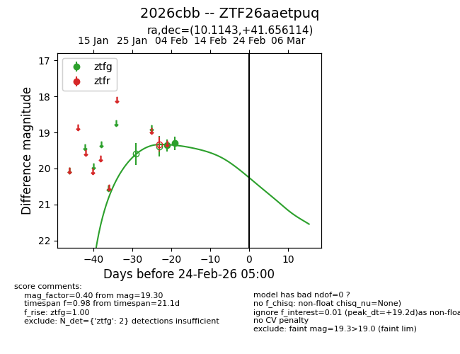
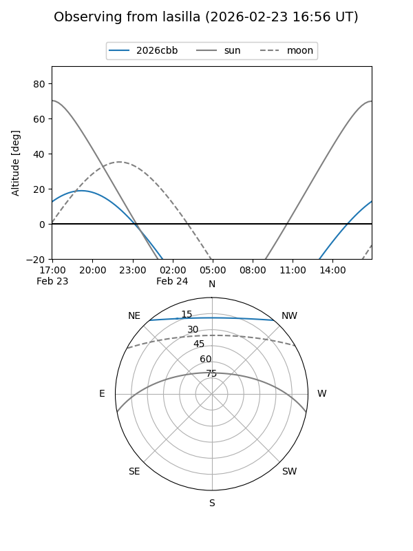
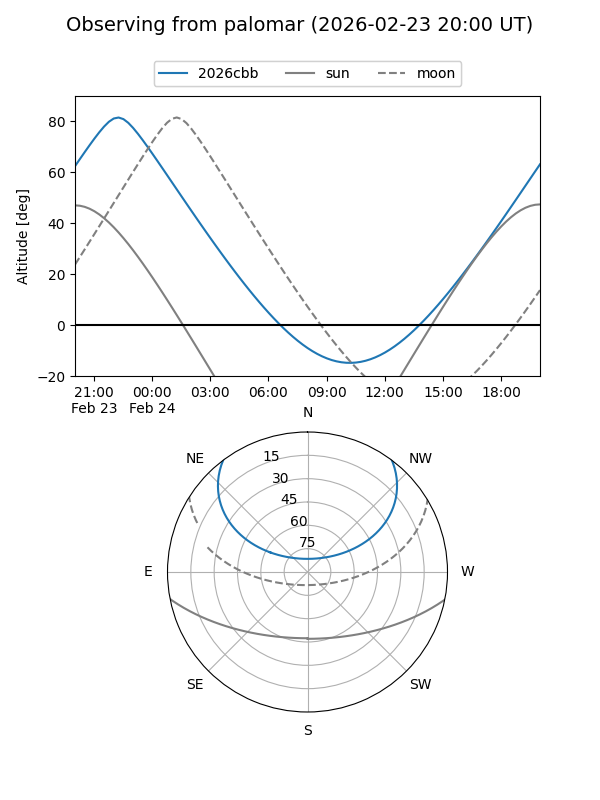

2026cbb
Target 2026cbb at 2026-02-24 09:08
Aliases and brokers:
FINK: link
Lasair: link
ALeRCE: link
TNS: link
YSE: link
alt names
ZTF26aaetpuq (ztf,fink_ztf)
2026cbb (tns,yse)
Coordinates:
equatorial (ra, dec) = 10.1143,+41.65611
equatorial (HMS+DMS) = 00:40:27.44,+41:39:22.01
galactic (l, b) = (120.7328,-21.16874)
Flags:
Photometry:
last ztfg=19.30
2 ztfg detections
Lightcurve

Visibility


Additional plots